幻境アセットセンター
⭐1.開き方
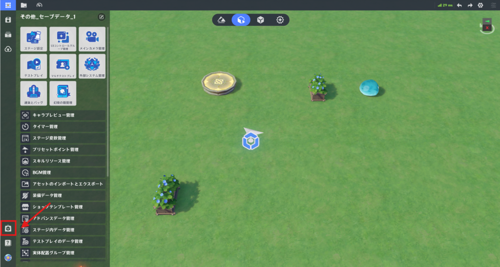
左上のシステムメニューを開き、左下のアイコンから、幻境アセットセンターのウェブサイトにアクセスします。
⭐2.幻境アセットセンター画面
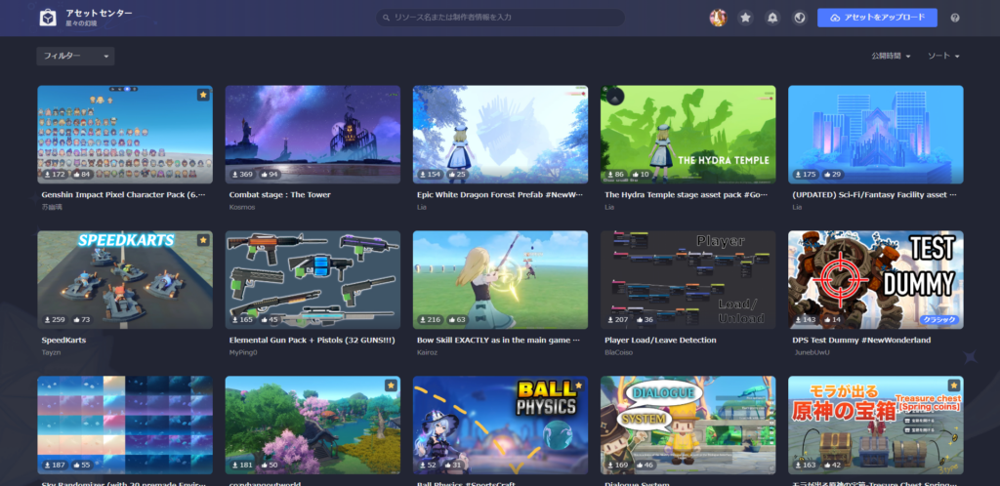
🌸1.タイトルバー
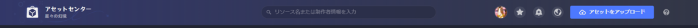
※英語で投稿しているクリエイターが多いため、日本語ではヒットしない可能性が高いです。
ボタンの機能は、以下の通りです。
🌸2.フィルターバー
フィルターバーには以下の機能が含まれています。
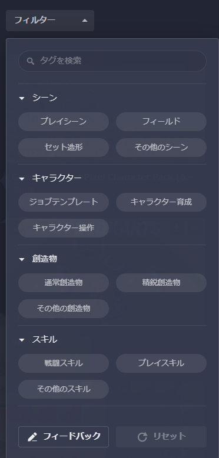
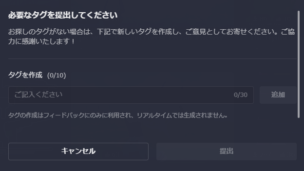
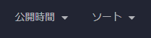
🌸3.アセットカード
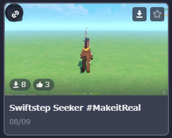
アセットカードには、以下の機能があります。
⭐3.アセット詳細
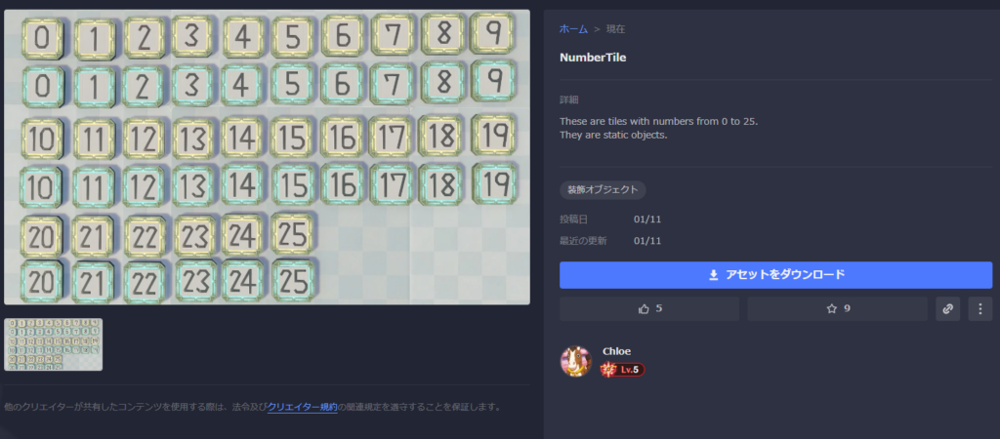
詳細ページには以下の機能が含まれます。
アセットをクリックすることで、アセットの詳細画面へ移動します。
「アセットをダウンロード」からアセットをダウンロードすることができます。
ダウンロードしたアセットは、インポートすることでエディタで使用できるようになります。
「アセットをダウンロード」からアセットをダウンロードすることができます。
ダウンロードしたアセットは、インポートすることでエディタで使用できるようになります。
詳細には、アセットの紹介の他に注意事項が書いてある場合もありますので必ず読むようにしてください。
アセットを使用したステージを投稿する際は、ステージ詳細にアセット製作者の名前、ID、アセット名を記載するようにしましょう。
⭐4.アセットのアップロード
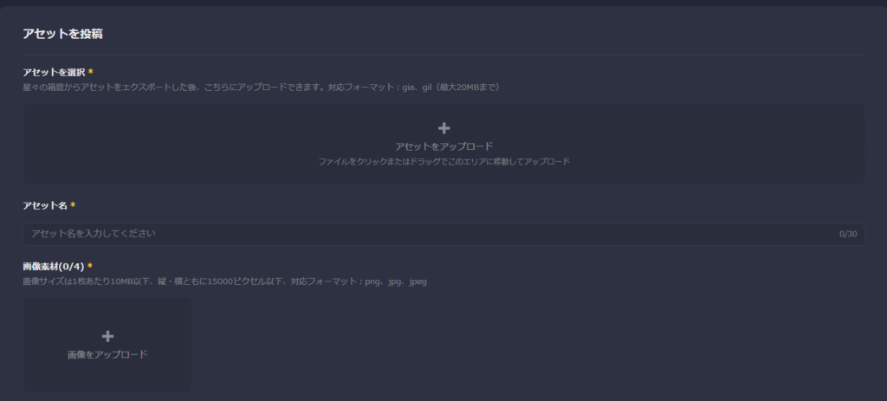
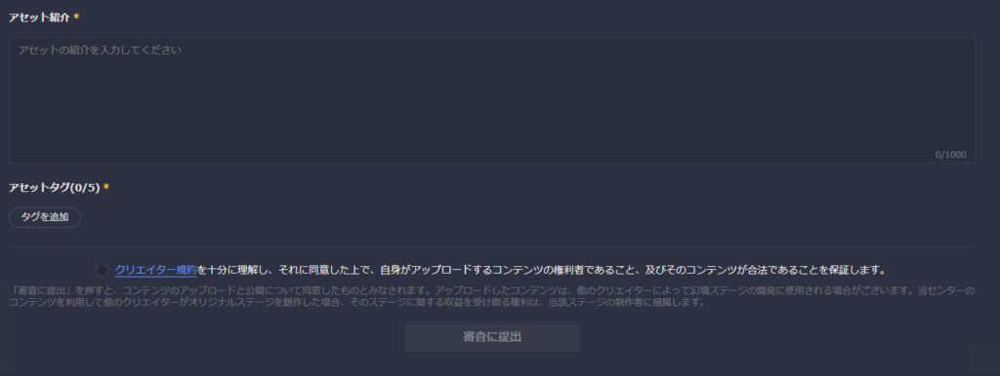
アップロードページには以下の機能が含まれています。
（具体的なアップロード制限については、アセットセンターをご確認ください）
アセットを選択：gia、gil ファイル。
アセット名
画像素材
動画素材
サムネイル
アセット紹介
アセットタグ
（具体的なアップロード制限については、アセットセンターをご確認ください）
エクスポートしたファイルをアセットセンターに投稿することができます。
プロジェクト内でエクスポートしたファイル(.gia)やプロジェクトファイル(.gil)がアップロードできます。
アセット名や紹介文を書いて、画像などを添付したら利用規約に同意して審査に提出します。
審査が完了したら自動的にアセットが公開されます。
プロジェクト内でエクスポートしたファイル(.gia)やプロジェクトファイル(.gil)がアップロードできます。
アセット名や紹介文を書いて、画像などを添付したら利用規約に同意して審査に提出します。
審査が完了したら自動的にアセットが公開されます。
⭐5.マイページ
🌸1.個人情報
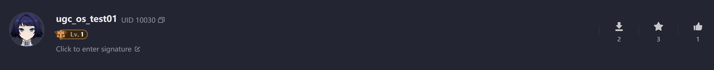
「個人情報」には以下の項目が含まれます。
🌸2.個人アセット詳細パネル
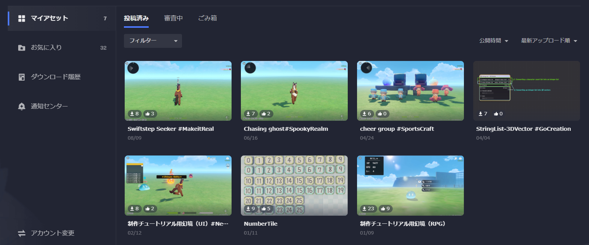
個人アセット詳細パネルには、以下の機能が含まれています